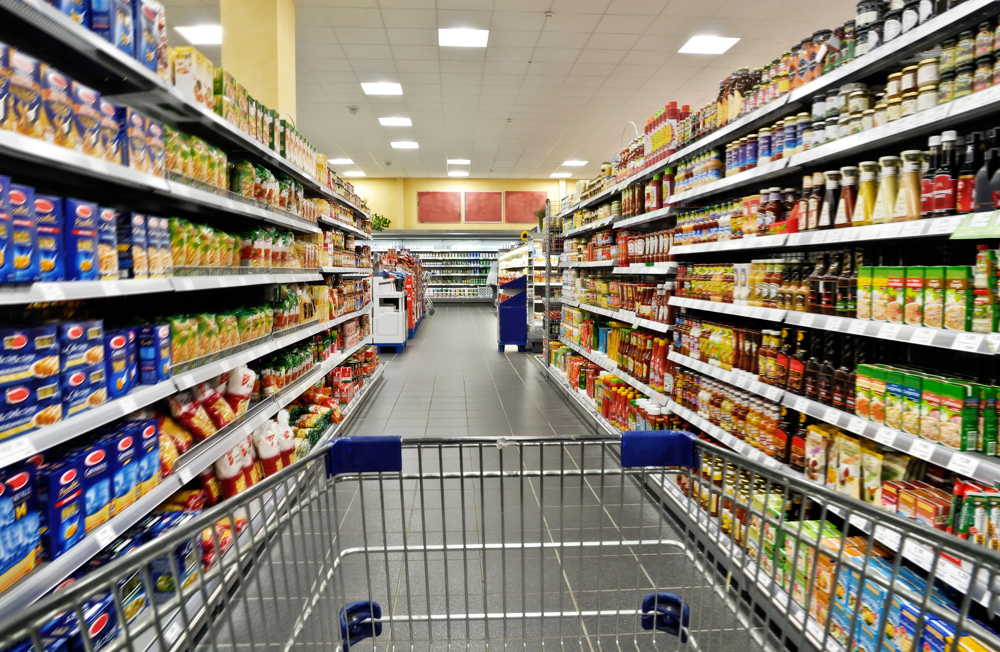

GROCERY STORE
A grocery store, or a grocery shop is a store that primarily retails a general range of food products, that are fresh and well packaged. In everyday U,S usage, however, grocery store is a synoym for supermarket, and is not used to refer to other types of stores that sell groceries.
WHERE WILL YOU FIND THEM
You will find the grocery store on the second floor, down stairs close to the gym store.